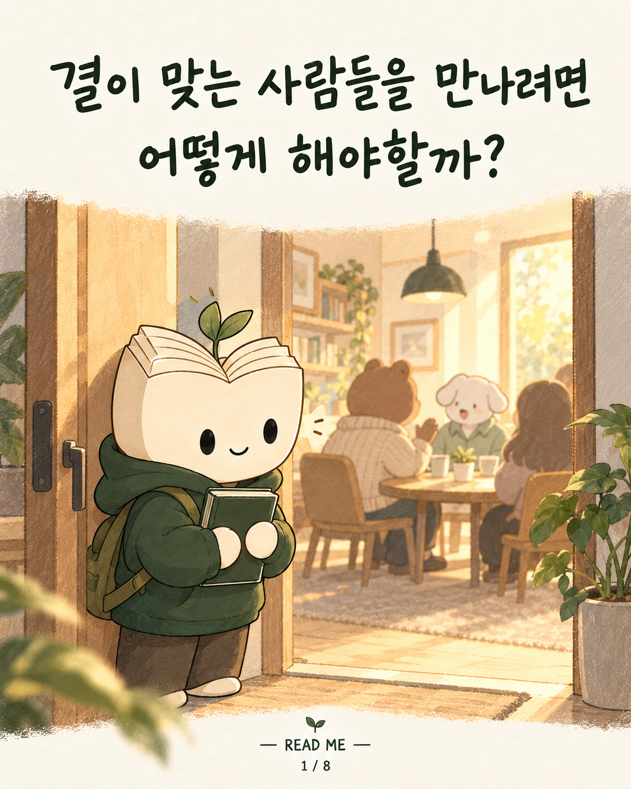
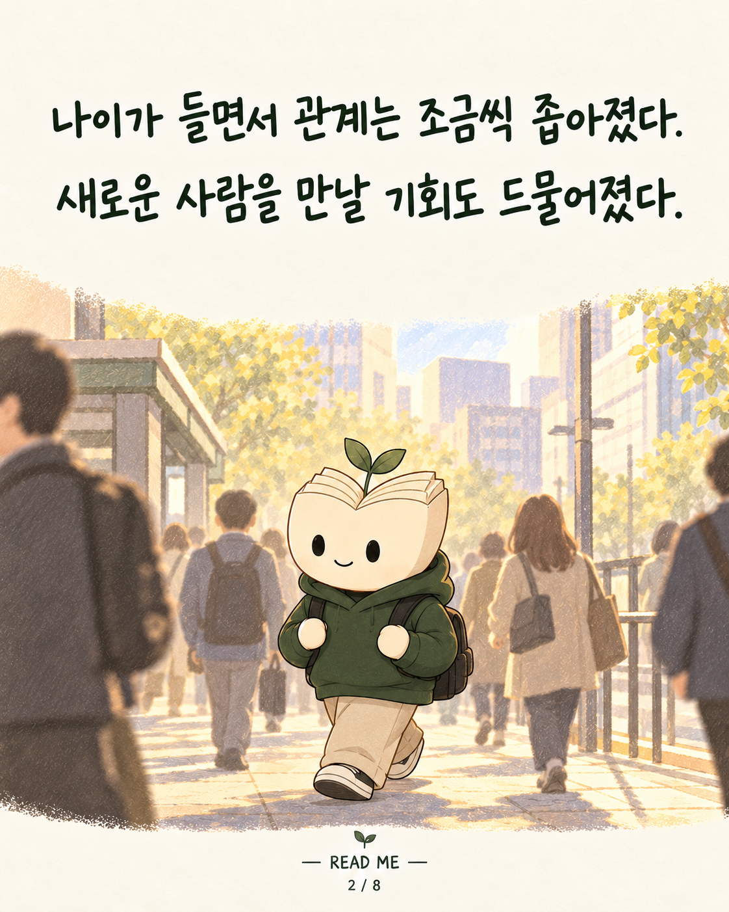
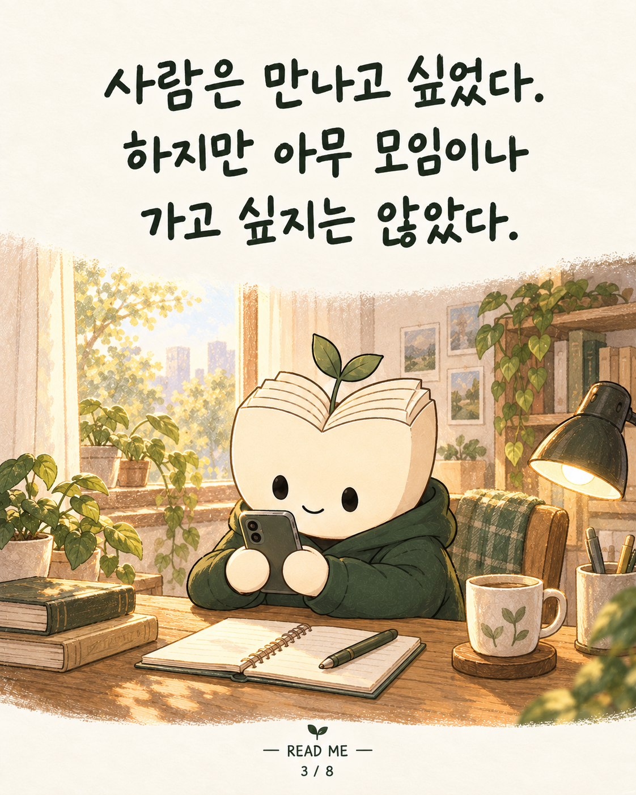
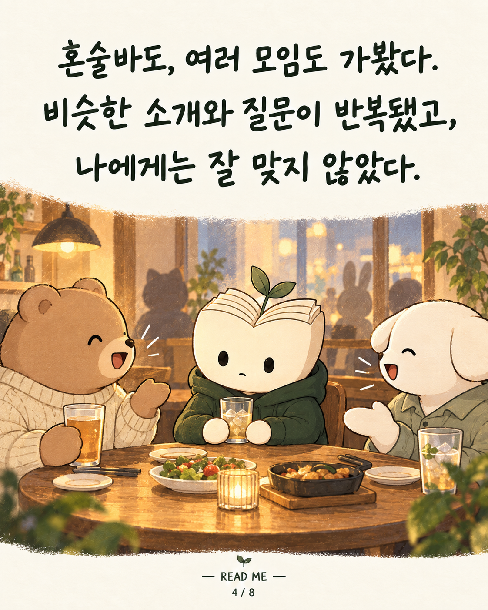
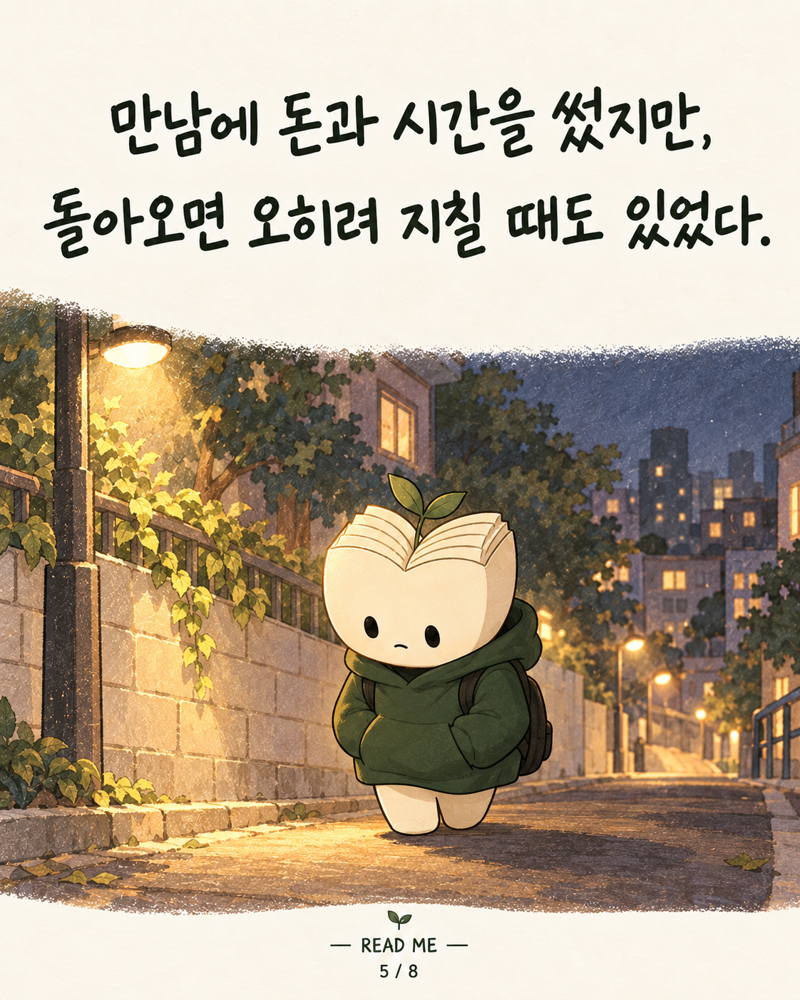
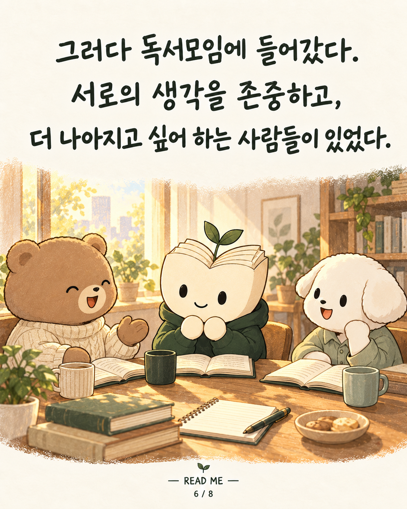
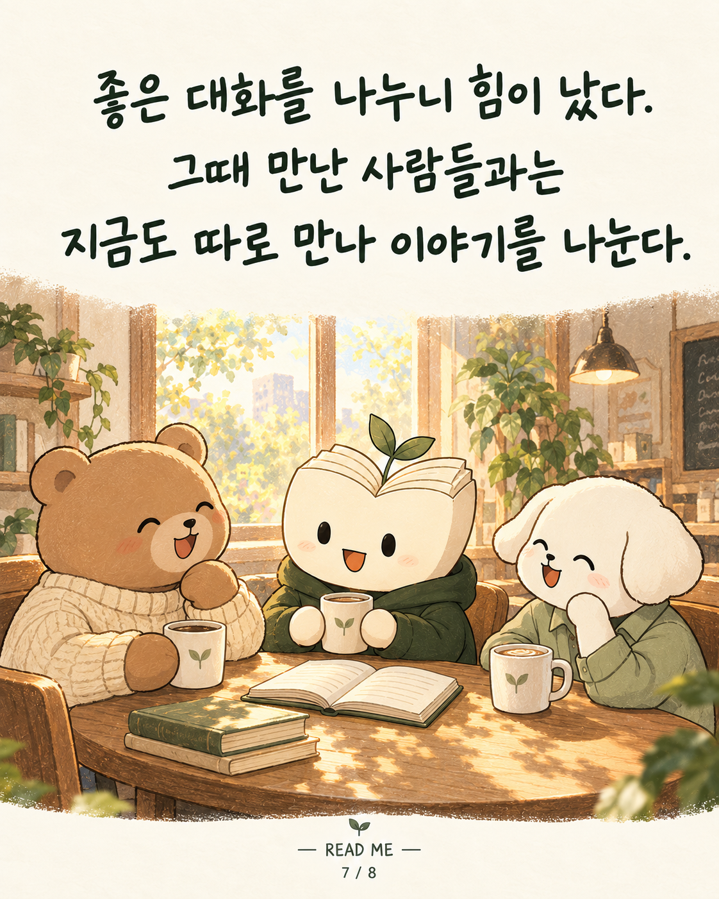
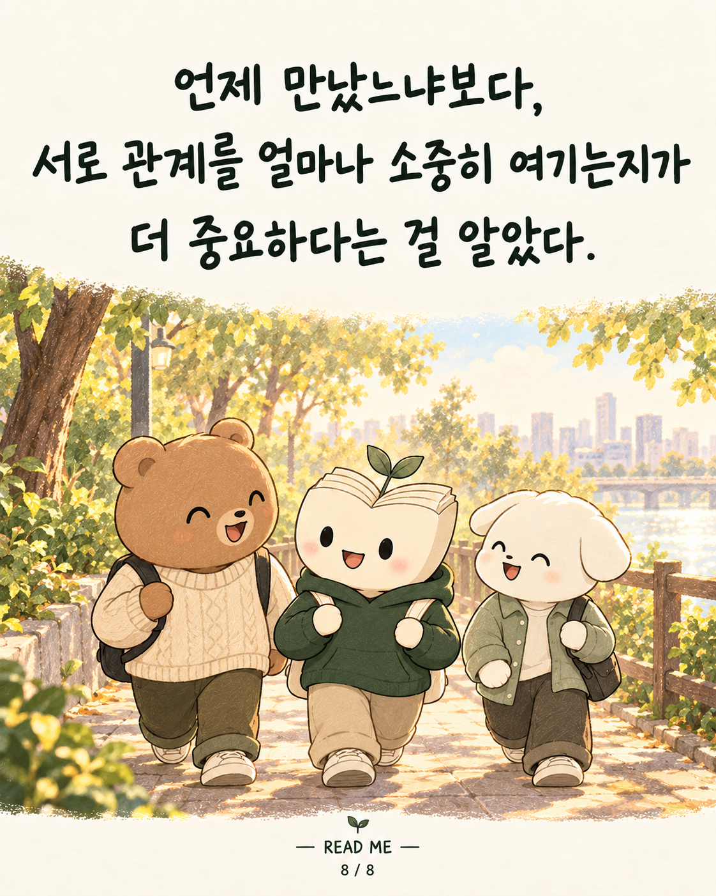

READ ME · 리미 인스타툰 2편

결이 맞는 사람들을 만나려면 어떻게 해야할까?

나이가 들면서 관계는 조금씩 좁아졌다. 새로운 사람을 만날 기회도 드물어졌다.

사람은 만나고 싶었다. 하지만 아무 모임이나 가고 싶지는 않았다.

혼술바도, 여러 모임도 가봤다. 비슷한 소개와 질문이 반복됐고, 나에게는 잘 맞지 않았다.

만남에 돈과 시간을 썼지만, 돌아오면 오히려 지칠 때도 있었다.

그러다 독서모임에 들어갔다. 서로의 생각을 존중하고, 더 나아지고 싶어 하는 사람들이 있었다.

좋은 대화를 나누니 힘이 났다. 그때 만난 사람들과는 지금도 따로 만나 이야기를 나눈다.

언제 만났느냐보다, 서로 관계를 얼마나 소중히 여기는지가 더 중요하다는 걸 알았다.